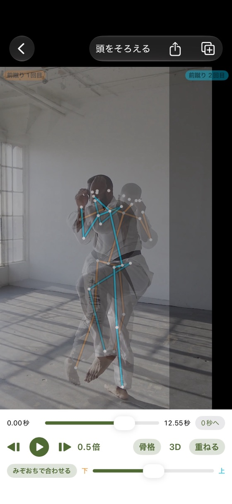
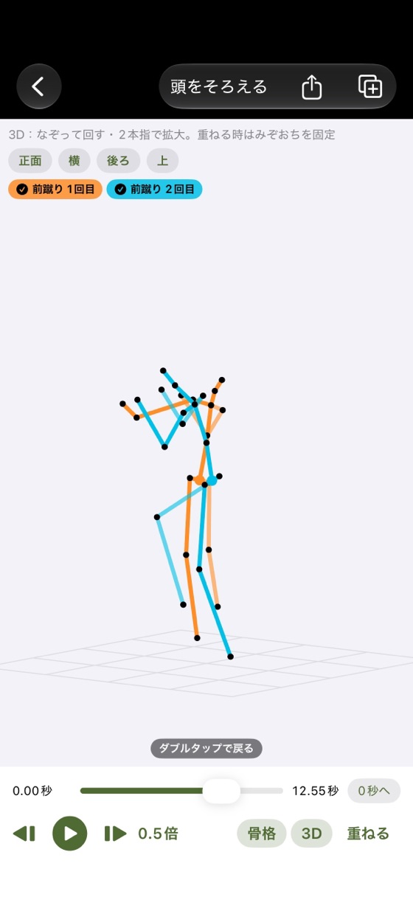
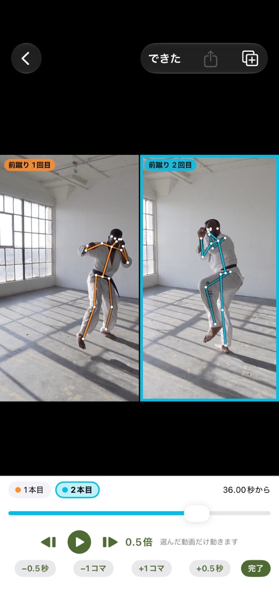

FEATURES
できること
並べて・重ねて比べる
2〜4本を同時に再生。2本を半透明で重ね、体の中心で合わせてずれを見る。1本の中の1回目と2回目どうしも比べられます。
スロー・コマ送り
0.1倍〜1倍のスローと1コマずつの送り・戻し。「頭をそろえる」で、何本でも同じ瞬間から再生。
骨格の線と3D
iPhoneのAIで骨格の線を動画に重ね、3Dにして正面・横・後ろ・上から指で回して見られます。
動画でシェア
比べている画面をそのまま動画に。LINEやメッセージで送ったり、写真アプリに保存したり。
SCREENS
画面



PRICE
値段
無料
¥0
- 骨格の線・3D
- 4本までの比較・頭をそろえる
- 動画でシェア
プラス
¥600（買い切り）
- 動画を5本以上入れておける
- 比べ方を組み合わせとして保存
- シェア動画の印と一覧の広告が消える
2026年12月13日までにこのアプリを入れた方は、買わなくてもずっと全部無料で使えます（広告も出ません）。
FAQ
よくある質問
骨格の線が出ません。
体全体（頭から足まで）が映るように、明るい所で撮ってください。読み込んだ直後は「骨格を調べています」と出ている間、アプリを開いたまま待ってください。途中で止まった時は、アプリを開き直すと続きから調べ直します。
3Dの骨格が出ません。
3DはiPhoneの中のAIで推定するため、機種によっては使えないことがあります（iOS 18 以上が必要です）。目安の表示で、正確な測定ではありません。
2人以上映っていて、別の人の骨格が出ます。
くらべる画面で、動画の左上の「人を選ぶ」を押し、見たい人を押してください。
同じ瞬間から比べたい。
くらべる画面の右上「頭をそろえる」を押し、動画ごとにつまみや再生・コマ送りで、構えた瞬間などに合わせてください。
1本の動画の中で、1回目と2回目を比べたい。
一覧で動画を1本だけ選び、「この1本の中で、技の回どうしをくらべる」を押してください。
動画の名前を変えたい・消したい。
一覧で動画を左にずらすか、長押ししてください。
プラスを買い直さずに使えますか？
同じApple Accountなら、機種変更や入れ直しの時に「購入を復元」を押すと使えるようになります。
SUPPORT
サポート
不具合・ご要望・ご質問は、メールでお知らせください。
お使いのiPhoneの機種・iOSのバージョン・アプリのバージョン（App Storeのアプリのページの「バージョン履歴」）を書いていただけると、早く調べられます。
ご注意
- 骨格・3Dは目安です。体全体が映るように撮ると、うまく出ます。
- 人を撮る時は、映る人の了解を得てから撮影・シェアしてください。